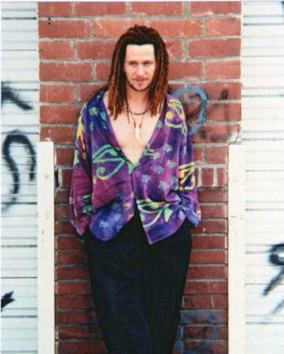

山内晃央
220cm
130kg
BWH:100cm/100cm/100cm
足:129.3cm
- 略歴 -
僕はああああああああああああああああああああああああああああああああああああああああああああああああああああああああです。
そして、あああああああであああああああああああああああああああああああああです。
- 出演歴 -
僕はああああああああああああああああああああああああああああああああああああああああああああああああああああああああです。
そして、あああああああであああああああああああああああああああああああああです。
- どんな俳優か -
僕はああああああああああああああああああああああああああああああああああああああああああああああああああああああああです。
そして、あああああああであああああああああああああああああああああああああです。